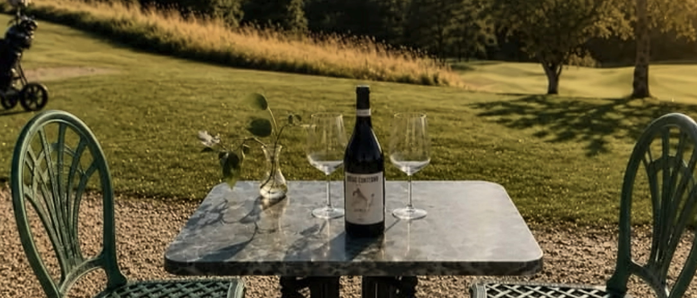
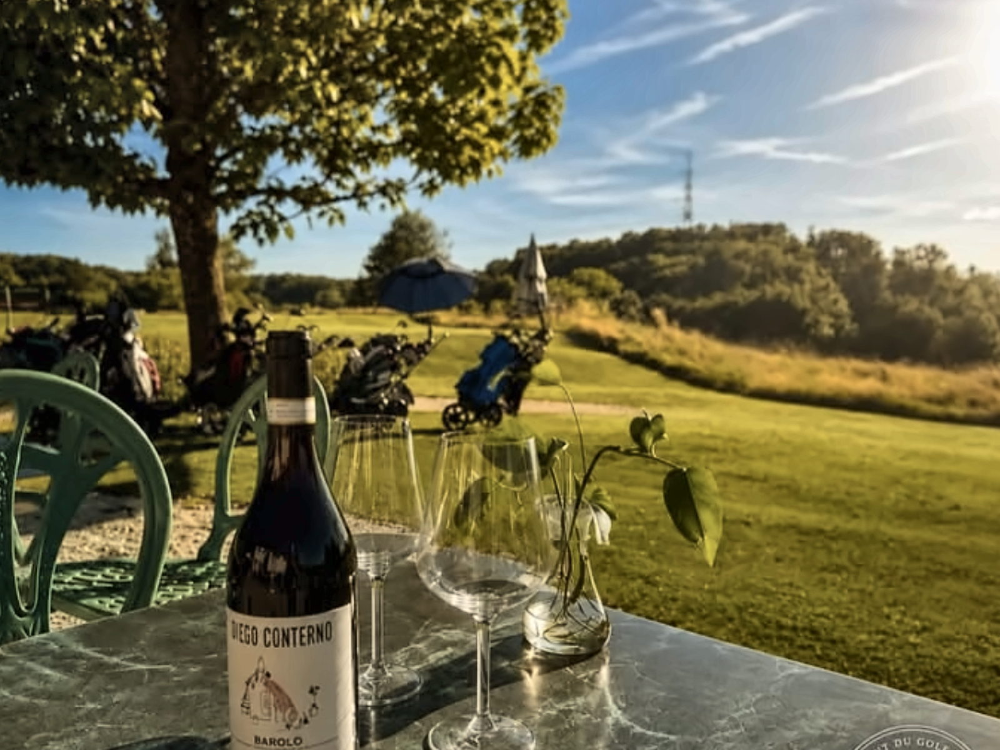
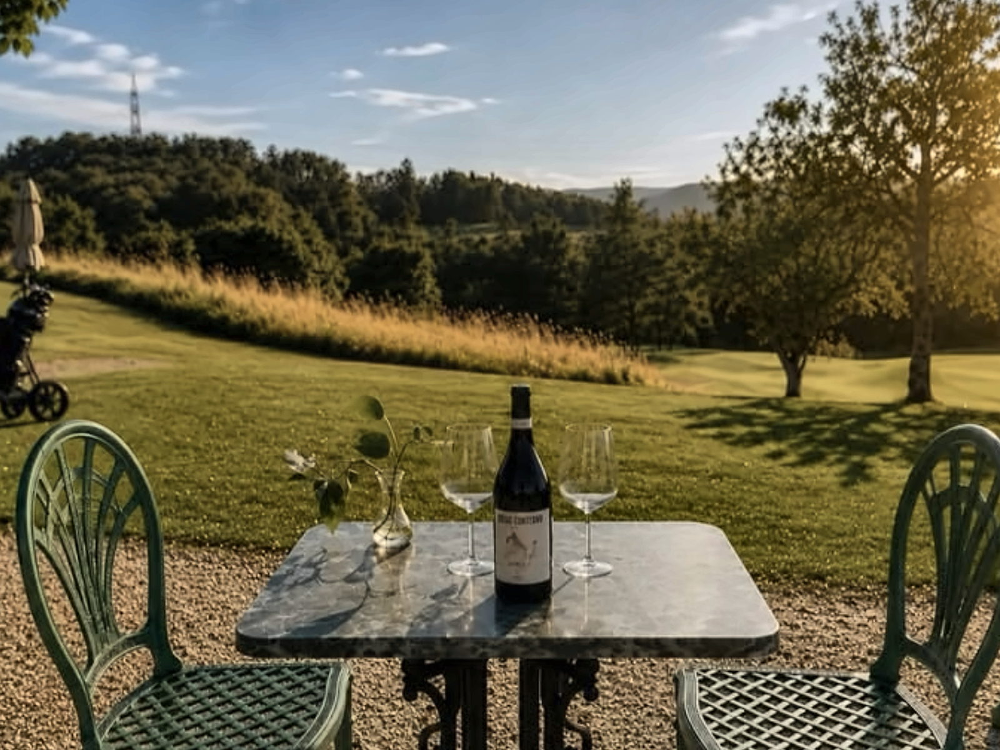

Photo à ajouterLa terrasse, panoramiqueterrasse-pano.jpg
La terrasse
Le parcours en vis‑à‑vis,
le ciel pour plafond
Aux beaux jours, la terrasse s’ouvre sur le green et les collines du Gros-de-Vaud. Le déjeuner s’y étire, l’apéritif s’y prolonge, et le soir le soleil se couche derrière les fairways.
Une partie de la terrasse est couverte et vitrée : la vue reste, quel que soit le temps. Les tables sont espacées, les parasols nombreux, et le service suit le rythme du lieu plutôt que celui de la ville.
On y vient pour un déjeuner rapide entre deux parcours, pour un repas de famille qui dure, ou simplement pour un verre en fin d’après-midi, sans forcément jouer au golf.
Citée par la presse parmi les « 100 terrasses de rêve » pour passer un bel été.
Source à préciser à vérifierLa terrasse en images
Faites glisser →
 Photo à ajouterLa terrasse, vue rapprochée
Photo à ajouterLa terrasse, vue rapprochéeterrasse-02.jpg

Photo à ajouterLe parcours depuis la terrasseterrasse-03.jpg
 Photo à ajouterUne assiette en terrasse
Photo à ajouterUne assiette en terrasseplat-03.jpg

Photo à ajouterLa terrasse en soiréeterrasse-04.jpg
 Photo à ajouterLe parcours du Domaine du Brésil
Photo à ajouterLe parcours du Domaine du Brésilparcours.jpg
Aux beaux jours
La terrasse ne se réserve pas en ligne
Un coup de fil suffit, et nous vous dirons si le soleil est de la partie.